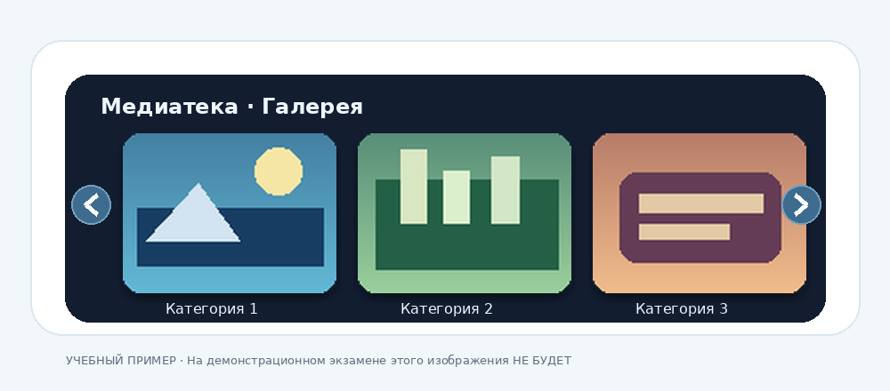

Методички по выполнению заданий
Пошаговые инструкции и проверка результата. Числа, тексты и правила сохранения берите из своего варианта.
Набор и оформление в Word
- Настройте страницу. Создайте документ и откройте «Макет → Поля → Настраиваемые поля». Укажите поля и ориентацию из задания. Наберите исходный текст, разделяя его на абзацы.
- Задайте параметры текста. В разделе «Главная → Стили» настройте стиль основного текста. Укажите шрифт и кегль, а в параметрах абзаца задайте выравнивание, красную строку, междустрочный интервал и отступы до и после абзаца. Примените «Заголовок 1» и «Заголовок 2» к соответствующим строкам. Если нужна нумерация, выберите многоуровневый список, связанный со стилями заголовков.
- Оформите колонки. Выделите только нужный фрагмент. Откройте «Макет → Колонки → Другие колонки», укажите число и ширину колонок, промежуток и разделитель. В поле «Применить» выберите выделенный текст. Если колонки захватили соседний текст, включите отображение знаков абзаца и проверьте разрывы раздела до и после фрагмента.
- Настройте колонтитулы. Используйте вкладку «Вставка» для верхнего и нижнего колонтитулов. Введите реквизиты из варианта, а номер страницы вставьте через команду «Номер страницы».
- Добавьте диаграмму и формулу. Через «Вставка → Диаграмма» выберите тип из задания и замените демонстрационные данные значениями варианта. Сверьте категории, единицы и подписи. Формулу наберите через «Вставка → Уравнение» или Alt + =, используя шаблоны дробей, индексов и сумм.
- Сохраните результат. Сохраните редактируемый DOCX и экспортируйте PDF. Откройте PDF и проверьте разрывы страниц, колонки, нумерацию, читаемость диаграммы и формулы.
Самопроверка. Заголовки видны в области навигации. Колонки применены к нужному фрагменту. Диаграмма и формула редактируются в Word.
Слияние документов в Word
- Создайте источник данных. Откройте «Рассылки → Начать слияние → Письма», затем «Выбрать получателей → Ввести новый список». В настройке столбцов создайте поля с точными названиями из варианта. Заполните пять строк и сохраните список «Адресаты». Если выдан готовый список, подключите его через «Использовать существующий список».
- Подготовьте одно письмо. Наберите постоянные части письма по образцу в варианте. В вариантах 39–48 разместите реквизиты отправителя слева и блок получателя справа. Для двух блоков можно использовать таблицу из одной строки и двух ячеек, настроив границы по образцу.
- Вставьте поля. Поставьте курсор на место изменяемого реквизита и выберите «Рассылки → Вставить поле слияния». В вариантах 39–48 в правый блок вставьте «Должность», «Организация», «Инициалы_Фамилия» и «Адрес_1», а в обращение — «Обращение», «Имя» и «Отчество». Для остальных вариантов используйте поля, указанные в задании.
- Просмотрите пять писем. Нажмите «Просмотр результатов» и пролистайте записи. Проверьте адрес, должность и обращение у каждого получателя. Если видны буквальные надписи в кавычках, замените их полями через вкладку «Рассылки».
- Сформируйте результат. Выберите «Завершить и объединить → Изменить отдельные документы → Все». Сохраните полученный документ в DOCX и PDF. Если задание требует архив с паролем, упакуйте итоговые файлы и проверьте извлечение.
Самопроверка. В результате пять уведомлений. Реквизиты и обращение подставлены из списка, а тема, основной текст и подпись сохранены по образцу.
Подготовка презентации в PowerPoint
- Подготовьте три скриншота. Откройте три изображения и сделайте по одному снимку фрагмента через Win + Shift + S. Сохраните снимки отдельно. На тренировке выбирайте изображения по теме варианта, на ДЭ используйте выданные материалы.
- Создайте три слайда. На каждом разместите отдельные заголовок, текст и скриншот. Для заголовков задайте Times New Roman, 24 пт, по центру. Для основного текста — Times New Roman, 18 пт и выравнивание по ширине, если это указано в варианте.
- Слайд 1. Выделите рисунок. На вкладке «Формат рисунка» откройте «Граница рисунка», выберите синий цвет, сплошную линию и толщину 4,5 пт.
- Слайд 2. Выделите рисунок и выберите «Формат рисунка → Обрезка → Обрезать по фигуре → Овал». При необходимости передвиньте изображение в пределах рамки обрезки.
- Слайд 3. Для третьего рисунка откройте «Формат рисунка → Эффекты для рисунка → Сглаживание краёв» и задайте 10 пт.
- Сохраните презентацию. Проверьте её в режиме показа слайдов. Сохраните PPTX и исходные снимки в папку варианта. Если нужен архив, используйте пароль из задания и проверьте извлечение PPTX.
Самопроверка. На трёх слайдах разные фрагменты изображений. Каждый эффект применяется к нужному рисунку. Заголовки и основной текст читаются в режиме показа.
Создание мобильного слайдера
Подготовьте в GIMP три изображения размером 120 × 90 px с прозрачными скруглёнными углами. В PowerPoint соберите статичный макет с тремя карточками и двумя стрелками. Итог для сдачи — снимок slider.png.
Скачать методичку по слайдеру · DOCX

Подготовка файлов
Создайте рабочую папку по заданию и подпапку «Изображения». Для тренировки подберите три изображения одной темы размером 1920 × 1080 px и сохраните их, например, как source1.jpg, source2.jpg и source3.jpg. На ДЭ работайте с выданными исходниками.
1. Кадрирование в GIMP
- Откройте первый исходник. Выберите инструмент «Кадрирование» (Shift + C) и задайте фиксированное соотношение сторон 4:3.
- Выделите область с главным объектом. Для исходника 1920 × 1080 px подойдёт область 1440 × 1080 px. Нажмите Enter. Кадрирование перед уменьшением сохранит пропорции объекта.
2. Масштабирование до 120 × 90 px
Откройте «Изображение → Масштабировать изображение» (Scale Image). Оставьте ширину и высоту связанными и задайте 120 × 90 px. Выберите качественную интерполяцию, например NoHalo или кубическую. После применения проверьте размер в свойствах изображения.
3. Прозрачные скруглённые углы
- В меню «Слой → Прозрачность» выберите «Добавить альфа-канал». Если команда недоступна, проверьте, есть ли у слоя альфа-канал.
- Включите «Закруглённые углы» в параметрах прямоугольного выделения (R). Задайте радиус после масштабирования. В образце КИМ он равен 10 px. В тренировочных вариантах используйте значение из задания: 8, 10 или 12 px.
- Выделите всю область 120 × 90 px от точки x = 0, y = 0. Инвертируйте выделение (Ctrl + I) и нажмите Delete. Снимите выделение (Ctrl + Shift + A) и увеличьте масштаб. В каждом углу должна быть видна шахматная сетка прозрачности.
4. Экспорт трёх PNG
Выберите «Файл → Экспортировать как» и сохраните img1.png. Повторите кадрирование, масштабирование и скругление для остальных исходников. Сохраните img2.png и img3.png. Проверьте размеры файлов и прозрачность углов. Формат PNG сохраняет прозрачность.
5. Сборка макета в PowerPoint
- Создайте пустой слайд. Добавьте подложку и короткий заголовок по теме варианта. Цвет фона и форму кнопок возьмите из задания.
- Вставьте три PNG в один ряд, сохранив пропорции 4:3 и одинаковый размер карточек. Выделите все три рисунка, затем выберите «Формат рисунка → Выровнять → Выровнять по середине» и «Распределить по горизонтали».
- Добавьте кнопку слева от первой карточки и справа от третьей. На кнопках разместите контрастные шевроны или стрелки. Левая указывает влево, правая — вправо. Сохраните редактируемый
slider.pptxдля тренировки.
6. Снимок slider.png
Запустите показ слайда (F5 или Shift + F5). Нажмите Win + Shift + S и выделите прямоугольную область макета. Откройте снимок в «Ножницах» и сохраните как slider.png. Откройте файл и проверьте, что в кадре весь фон макета, три карточки и обе стрелки.
Проверка перед сдачей
- Каждый из трёх PNG имеет размер 120 × 90 px. Все четыре угла прозрачные и скруглены с радиусом из варианта.
- Карточки стоят в одном ряду с равными промежутками. Стрелки по краям контрастные и направлены в разные стороны.
- Снимок открывается под точным именем
slider.png. Панели PowerPoint остались за границами кадра.
Частые ошибки
- Изображение вытянуто. Сначала кадрируйте до 4:3, затем уменьшайте с сохранением пропорций.
- Углы белые. Добавьте альфа-канал, удалите выделенные углы и экспортируйте в PNG.
- Карточки разного размера. В PowerPoint включите сохранение пропорций и задайте рисункам одинаковую высоту.
- Стрелка перекрыта подложкой. Переместите подложку на задний план, а кнопку поставьте рядом с краем ряда.
- Сохранена только презентация. Сделайте снимок собранного макета и сохраните его как
slider.png.